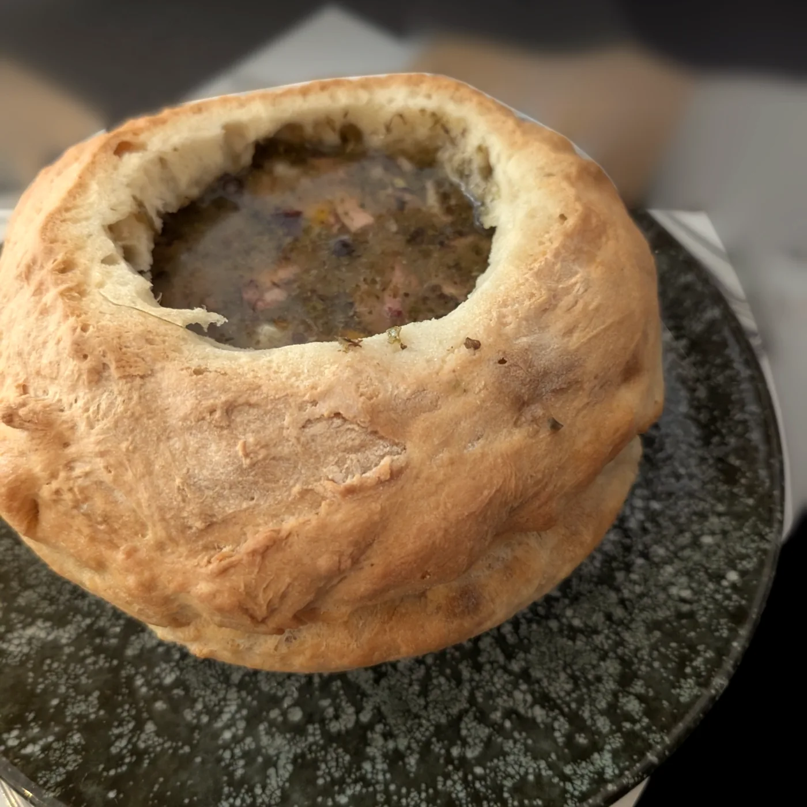

La carte
Spécialités polonaises
← OsadaLes entrées

Żurek w chlebie
Potage à la base de farine de seigle, saucisse polonaise, ail et arômes typiques servie dans un bol à pain
Barszcz z krokietem
Potage de betteraves rouge accompagné de crêpe farcie aux cèpes et choucroute
Śledź w dwóch odsłonach
Le hareng deux variétés
Oscypek z patelni z żurawiną
Fromage de brebis fumé aux airelles
Les plats

Gołąbki w sosie pomidorowym
Choux farcis à la viande hachée, sauce tomate servi avec de la purée
Placek ziemniaczany z gulaszem wieprzowym
Galette de pomme de terre servie avec son goulash de viande de porc (collé de porc)
Rolada wołowa w sosie, kapusta czerwona, kluski lub purée
Roulade de bœuf sauce brune et choux rouge servie avec de la purée où gnocchi maison
Żeberka duszone w piwie i warzywach podawane z kapustą i ziemniakami
Côtes de porc "spare ribs" braisées à la bière et légumes servie avec de la choucroute et pommes de terre sautées

Pierogi z serem i ziemniakami
Raviolis farcis au fromage blanc, pommes de terre et oignons
Pierogi z kapustą i grzybami
Raviolis farcis à la choucroute et cèpes
Pierogi z mięsem
Raviolis farcis à la viande de bœuf, porc et poulet
Pierogi mixte
Golonka z ziemniakami i kapusta
Jarret de porc servi avec de la choucroute et pommes de terre vapeur
Schabowy z kapusta zasmazane i ziemniakami
Escalope de porc panée, purée et choucroute
Desserts
Sernik
Gâteau polonais au fromage « Cheescake »
Makowiec
Gâteau roulé polonais aux graines de pavot
Szarlotka
Gâteau polonais aux pommes
Brasserie
Et la carte de la brasserie
- Carpaccio de bœuf
- Galettes de pomme de terre sauce champignons
- Salades : César, deux saumons, scampis, thon
- Filet de bœuf grillé
- Tartare de bœuf au couteau
- Cordon bleu de poulet
- Rumsteak Black Angus
- Bouchée à la reine
- Hamburger pur bœuf
- Dos de cabillaud sauce champagne
- Filets de dorade royale sauce vierge
- Scampis flambés au cognac
- Linguine aux scampis
- Paccheri au filet de bœuf
- Desserts : moelleux au chocolat, crème brûlée, mousse au chocolat, dame blanche, tiramisu